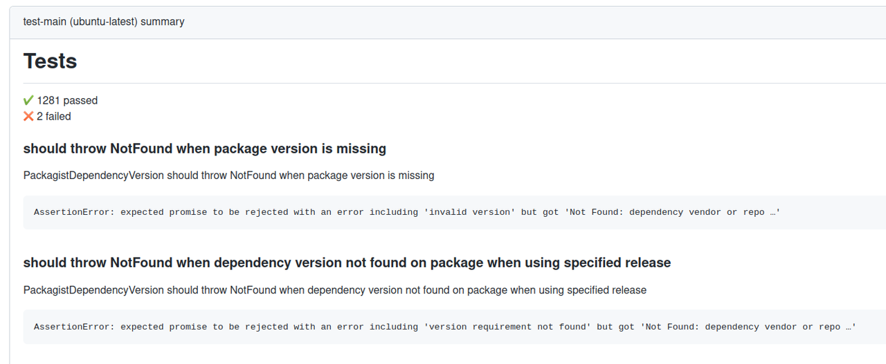

Generating a GitHub Markdown Summary from Mocha
I recently wanted to migrate some CI builds running mocha tests from CircleCI to GitHub Actions. I also wanted to use Job Summaries to produce a markdown summary of the build. This allows you to output a summary of your workflow run by echoing markdown to a special environment variable called $GITHUB_STEP_SUMMARY e.g: echo '### Hello world! :rocket:' >> $GITHUB_STEP_SUMMARY
We run our tests with mocha, which doesn't ship with a markdown output formatter. The "min" formatter was quite close to what I wanted (a markdown summary of any failed tests but a "quiet" output if everything passed). Dumping that to a code fence would have probably been acceptable. Unfortunately our test suite has a number of tests which log output to stdout which made things a bit messy as the "min" formatter also dumps to stdout. So I decided to write a quick script to parse mocha's json output and produce a markdown summary. Doing this also allowed me to uses some nicer formatting than dumping console output into a code fence.
// mocha2md.js import fs from 'fs' const title = process.argv[2] const data = JSON.parse(fs.readFileSync(process.argv[3])) process.stdout.write(`# ${title}\n\n`) if (data.stats.passes > 0) { process.stdout.write(`✔ ${data.stats.passes} passed\n`) } if (data.stats.failures > 0) { process.stdout.write(`✖ ${data.stats.failures} failed\n\n`) } if (data.stats.failures > 0) { for (const test of data.tests) { if (test.err && Object.keys(test.err).length > 0) { process.stdout.write(`### ${test.title}\n\n`) process.stdout.write(`${test.fullTitle}\n\n`) process.stdout.write('```\n') process.stdout.write(`${test.err.stack}\n`) process.stdout.write('```\n\n') } } }
Combine that with some workflow yaml to run the tests with the json reporter and use our script to write the report.
- name: Run tests run: npm run test:core -- --reporter json --reporter-option 'output=reports/test.json' - name: Write Markdown Summary run: node mocha2md.js Tests reports/test.json >> $GITHUB_STEP_SUMMARY
and we've got ourselves a nice little summary report from our mocha tests.
